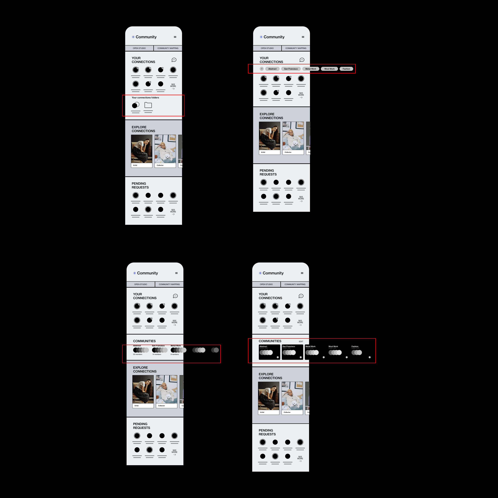
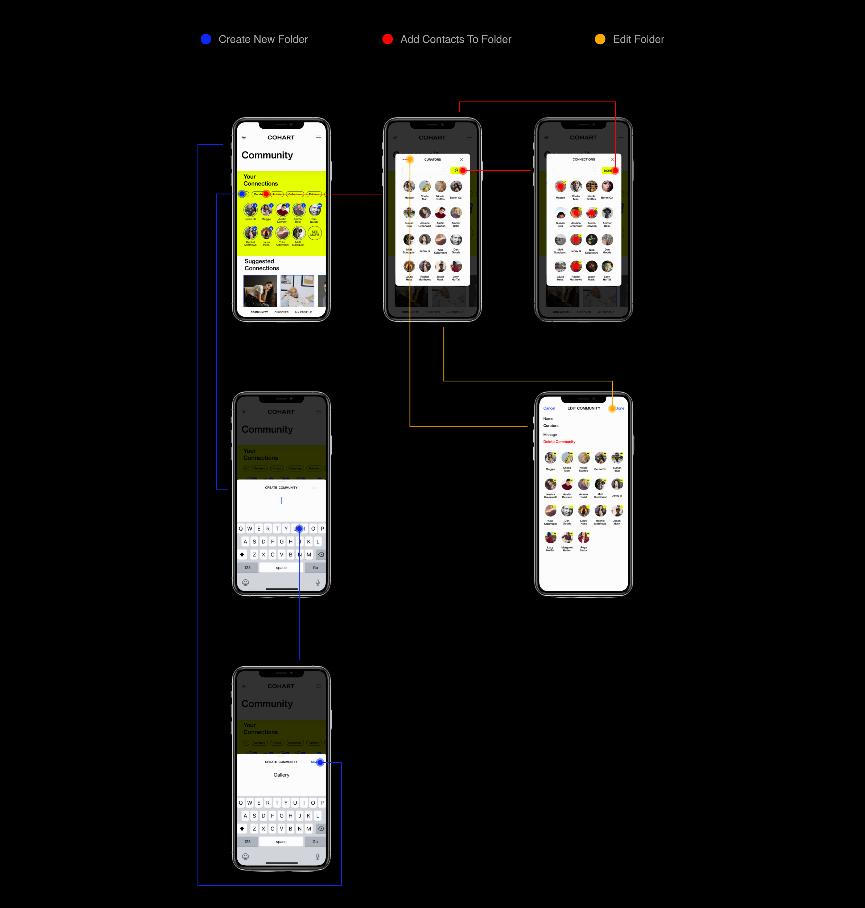

Cohart
Lead UX / UI Designer | Figma
2020 - 2021
COMMUNITY FOLDER OVERVIEW
Cohart is a social media platform where creatives, professionals in the art industry, and art enthusiasts can connect and build genuine relationships by sharing their passion and love for art. Since there are many titles that users can occupy within the art space. The Community Folder feature allows the users to easily filter through different groups of their community in Cohart to find the contact they’re looking for quickly and easily.
PROBLEMS
The lack of an option to filter through countless connections besides the search filter requires memorizing specific names. It is difficult for any user to refine their search to a specific name when the average social media account follows more than 100 profiles.
SOLUTIONS
Utilizing a foldering system for categorizing connections by their titles such as artists, curators, etc. help user filter through countless contacts.
UX CHALLENGES
The Community page already has a UI system, so as the sole designer of the community folder I had to develop a UX flow that supplements the UI within the overall flow of the product. Additionally, I had to develop an editing system for the Community since it was not yet designed.
GOALS
This feature aims to reduce the pain point of looking through an endless number of contacts so the user can quickly access different profiles. As a result, allowing for a more seamless flow that encourages interactions.
UNDERSTANDING
Upon interviews with our early adopters, we received many feedbacks that helped us understand that many creatives on the internet today find it difficult to build genuine relationships with other creatives on other platforms. As a result, the focus of Cohart is to simplify and streamline the interaction process between users that encourage one on one and group conversations.
ENCOURAGE INTERACTIONS
Steramline the process of one on one interactions between users to encourage dialogue.
SHORTEN SEARCH
Customizable connections filters to improve searching for contacts.
IDEATE
PROTOTYPE
ONBOARDING PROCESS OVERVIEW
Since Cohart beta is still in the development stages, the onboarding process have under gone many revisions to be the most streamline process. A successful onboarding of any product requires the least amount of effort while obtaining the most crucial information from the user. So as the sole UX/UI Designer of the revised onboarding process, I did reimagined the process to be captivating for the users while acquiring information that is vital to building a user profile and populating the Discovery Feed.
PROBLEMS
The previous onboarding had an overwhelming number of information input and surveys that prolong the time until the user gets to the actual product.
GOALS
To mitigate the extended onboarding process, secondary information were relocated to the profile page where the user can be more in-depth with their profile. Leaving only information that is crucial to build a user profile and help customize the user’s feed for the Discovery Page.
UX CHALLENGES
Figuring out the secondary information that we can remove from the onboarding and where we can place them so the user can still have easy access to them.
SOLUTIONS
To create a swift and effortless onboarding process so the users can start using the product as quickly as possible. Additionally, creating a unique onboarding experience that initiates the act of discovery.
UNDERSTANDING
After countless meetings and research, I narrowed down to two vital pieces of information for the onboarding that allows the user to create an initial presence on the platform and help us populate the user’s Discovery Page with contents curated to their interests.
PRIMARY INFORMATION
1. The User's Name
The user's name is the essential to developing a presence on the platform.
2. Interested Mediums of Art
The user's mediums of interest help us populate their main feed with contents that pertain to their favorite art mediums.
SECONDARY INFORMATION
Questions that were removed and their new location.
1. Location —> User Profile
2. Which of these describes you best? (Title) —> User Profile
3. What are you passionate about? —> User Profile as tags
4. What are you looking for here? —> Secondary survey after 24 hours of use
5. Who do you want to connect with? —> Secondary survey after 24 hours of use
BETA V1.1
12 Frames
Minimum of 26 clicks

BETA V1.2
4 Frames
Minimum of 10 clicks


re_KLASIC